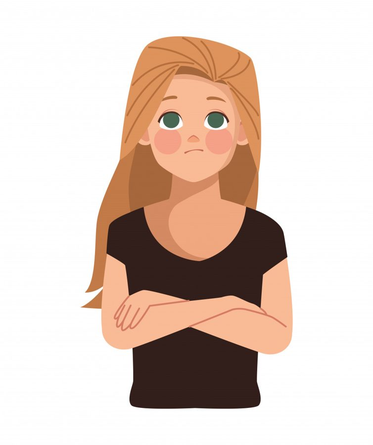

Бывают дни, когда особенно хочется получить знак от мира. Чтобы кто-то свыше (или просто случай) шепнул: «Всё правильно, ты на верном пути, продолжай». Мы выглядываем в окно, всматриваемся в цифры на часах, прислушиваемся к обрывкам разговоров - одним словом, ищем подтверждение, что всё будет хорошо.
А что, если этот знак можно создать самим? Не как суеверие, не как магический ритуал, а как внутреннюю опору. Способ сказать себе в нужный момент: «Я здесь, я справляюсь, всё идёт так, как надо». И речь здесь не про магию, а всего лишь про фокус внимания. Психология давно знает: когда у нас есть точка фокуса, мозг начинает замечать то, что раньше проходило мимо. А замечая - мы чувствуем себя чуть устойчивее, чуть спокойнее, чуть больше дома в этом мире.
Как выбрать свой знак?
Всё просто. Выберите любой образ, который станет для вас личным сигналом. Что-то, что будет встречаться ровно настолько часто, чтобы напоминать: «Ты не одна. Ты в потоке. Ты в контакте с собой».
Это может быть что угодно:
- рыжая кошка во дворе;
- белая машина на парковке;
- определённое число на часах (11:11, 18:18, 21:21);
- жёлтый лист на асфальте в любой сезон;
- слово, которое вдруг слышишь дважды за день;
- конкретная песня, заигравшая в кофейне.
У меня, например, когда-то появилась такая примета: если я вижу кого-то в атрибутике моей любимой команды, значит, день будет удачным. И знаете, пока я училась в университете, один парень из параллельной группы был преданным фанатом и ходил в этих футболках чуть ли не каждый день. Сколько же у меня тогда было удачных дней! Я улыбалась, кивала себе и чувствовала: «Всё точно идёт по плану». Это создавало ощущение лёгкости и правильности происходящего.
Что делать, когда встречаешь знак?
Ничего сложного. Просто договоритесь с собой: когда я вижу этот знак - значит, всё уже хорошо. Или: удача рядом. Или: я в нужном месте в нужное время. Не нужно сложных ритуалов. Достаточно мысленно кивнуть, улыбнуться, сказать «спасибо». Как другу, который встретился взглядом в толпе и напомнил: «Ты не одна в этом городе».
Это работает не потому, что мир посылает вам зашифрованные сообщения. А потому, что вы разрешаете себе замечать доброту мира. Разрешаете видеть не только угрозы, но и маленькие подтверждения, что жизнь - на вашей стороне.
Почему это важно?
Потому что мы получаем от жизни то, во что верим. Если внутри живёт убеждение, что мир опасен, а люди хотят сделать больно, - мы будем замечать только подтверждения этому. Каждую грубость, каждый косой взгляд, каждую несправедливость. И наша картина мира будет укрепляться, становясь всё тяжелее.
Если же мы позволяем себе замечать маленькие знаки поддержки, мир начинает разворачиваться другой стороной. Не потому что он объективно изменился. А потому что изменился фокус нашего внимания.
Веришь, что жизнь прекрасна - и она прекрасна. Веришь, что выхода нет - и не найдёшь выхода. Ждёшь счастья - оно уже в пути.
Это не наивный позитив, это нейробиология внимания: мозг находит то, на что настроен искать.
Но осознания недостаточно
Конечно, можно прочитать десятки статей, понять все причины своих реакций, разобрать по косточкам детские травмы и думать: «Теперь-то я всё поняла, теперь заживёт». Но почему-то не заживает. Почему?
Потому что осознание - это безусловно важный шаг. Но оно само по себе не лечит, а просто называет боль. Даёт ей имя. А исцеление происходит в живом контакте, в отношениях.
Например, травма отвержения - она когда-то родилась в отношениях. Кто-то важный не подошёл, не обнял, не ответил. И с тех пор внутри страх, что снова повторится та же холодная пустота. И сколько ни читай, сколько ни анализируй - одной головой эту рану не закрыть. Потому что ей нужно другое: новый, тёплый, бережный опыт с человеком, которому можно доверять.
С тем, кто не исчезнет, не отвернётся, не накажет молчанием. С тем, кто выдержит твою уязвимость и не использует её против тебя. Это может быть психолог. Это может быть партнёр. Это может быть друг, с которым впервые можно не играть роль «сильной» и не бояться, что за слабость отвергнут.
Мы не оттаиваем в одиночестве. Мы оттаиваем, когда нам тепло с другим человеком. В его присутствии и с его принятием.
Интеллект объясняет, но исцеляют отношения
Знаки, которые мы себе выбираем, - это способ сказать себе: «Я здесь, я с собой». Это шаг к тому, чтобы стать для себя тем самым бережным Другим. Начать замечать свои потребности, свои маленькие радости, свои «всё идёт так, как надо».
А когда у нас есть эта внутренняя опора, мы иначе вступаем в контакт с миром. Мы меньше ждём подтверждений извне, но при этом - вот парадокс - начинаем замечать их гораздо больше. Потому что не ищем лихорадочно, а спокойно принимаем.
Попробуете? Выберите сегодня свой знак. Рыжую кошку, белую машину, число 21:21 на часах. И в следующий раз, когда встретите его, просто улыбнитесь. Себе. Миру. Той невидимой нити, которая связывает вас с чем-то большим.
И помните: всё становится проще, когда понимаешь, что каждый человек видит мир из своего состояния. Красивые видят красоту во всём, уродливые придираются даже к совершенству. И если сегодня вас как-то обидели - это не про вас. Это про них. А у вас - свой путь, свои знаки и своя, только вам ведомая, удача.
Статья подготовлена на основе материалов психологической практики. Если тема откликнулась, вы можете связаться со мной для обсуждения возможности индивидуальной работы.
Статья опубликована на b17.ru.